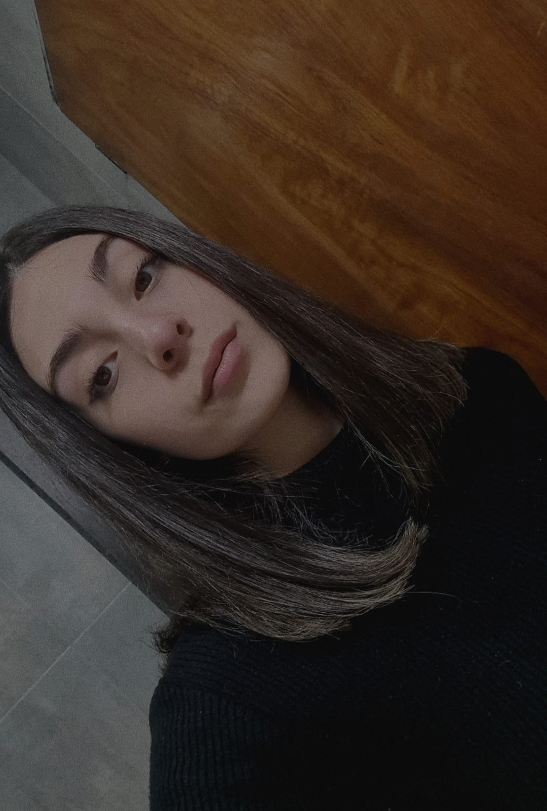

¡Hola!
Soy Candela Cueva —me dicen Can—, tengo 23 años y estudio Diseño y Comunicación Visual en la UNLa. Soy una persona organizada, proactiva y muy comprometida. Como especialista en redes sociales, me dedico a potenciar la presencia online de las marcas uniendo creatividad y estrategia: desde la administración de cuentas y la creación de campañas publicitarias, hasta el desarrollo de estrategias orientadas a ventas.
SABER MAS